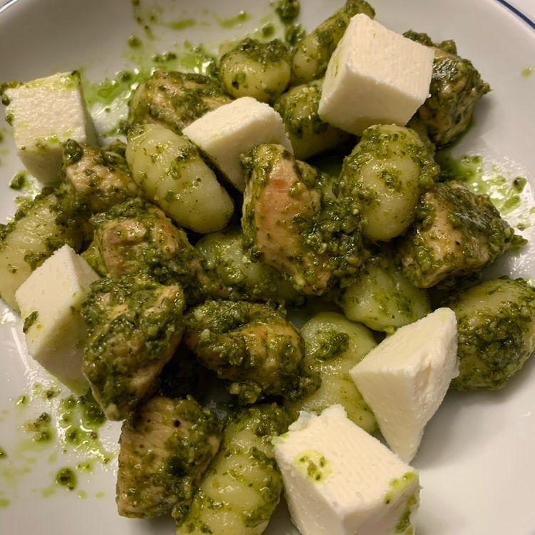

Gnocchi

Description
Quick recipe that can be made with prepared gnocchi and pesto, plus chicken breast and fresh mozzarella. Very easy; so easy, I'm sure it borders on a non-recipe. You're really just combining ingredients. You can also experiment with adding other ingredients, like mushrooms or veggies. Anything that needs to be cooked can probably be added at the chicken stage. I did not add any onions or garlic, because the pesto I used already had both, but if your pesto does not, you can add those with the oil as well.
Ingredients
- 1 tablespoon olive oil
- 1 skinless, boneless chicken breast
- salt and ground pepper to taste
- 2 tablespoons chicken broth
- 1 (8 ounce) jar prepared pesto
- 1 (12 ounce) package potato gnocchi
- 4 ounces small fresh mozzarella balls
Steps
- Heat olive oil in a saucepan. Season chicken pieces with salt and pepper; cook and stir in the hot oil until no longer pink in the middle, 7 to 10 minutes. Remove chicken to a bowl using a slotted spoon, retaining drippings in the pan.
- Pour chicken broth into the saucepan. Bring broth to a boil while scraping the browned bits of food off of the bottom of the pan with a wooden spoon; continue cooking until the broth reduces in volume by about half, 7 to 10 minutes. Return cooked chicken to the saucepan. Stir pesto through the chicken mixture; remove from heat.
- Bring a large pot of lightly salted water to a rolling boil. Cook gnocchi at a boil until they float to the top, about 3 minutes. Remove gnocchi from the water to a large bowl using a slotted spoon, retaining water in the pot.
- Place the saucepan with the chicken and pesto over the boiling water; cook and stir over the boiling water until warmed completely, about 5 minutes. Pour chicken and pesto mixture over the gnocchi; add mozzarella and stir until evenly mixed.